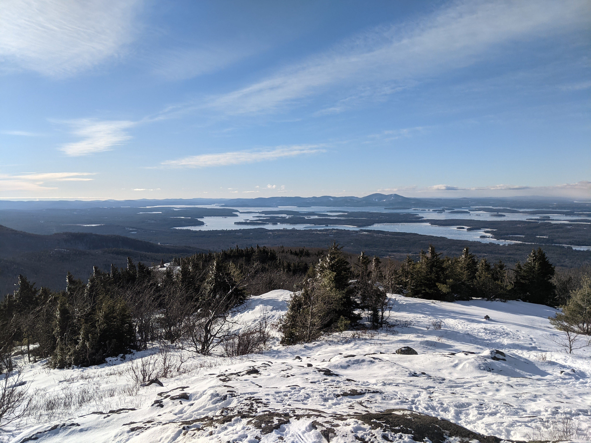
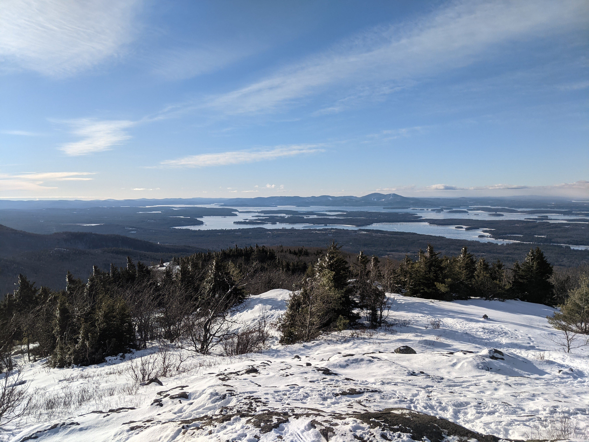

Distance
Distance Elevation
Elevation Observed Wildlife
Observed WildlifeThe Castle in the Clouds hiking area is criss crossed with carriage roads and highlighted by two peaks: Mount Shaw and Mount Roberts. The ascent to both include great views of Lake Winnipesaukee and from their peaks the length of the Sandwich Range is clear to the north. Roberts Ridge is wide open at times and provides more scenery than the hike up its counterpart. This climb is great for anyone looking for a summit that requires less work than four thousand footers in the Whites.
I was looking for a winter hike to continue to beef up my experience. The single digit weather kept away my usual partner, so I did this one solo. I was looking for a place with snow cover and a view. I had hiked Mount Shaw on New Years Eve and liked the area and pretty views of the Sandwich Mountains so I picked the other most notable peak in the Ossipee Range, Mount Roberts. I chose to make it a loop, which added some mileage. In retrospect I would have made it an out and back or chosen a different path down, I didn’t enjoy the switchbacks all the way down the carriage roads which added unnecessary mileage and prevented glissading.
I started this hike early, at 7:30am, and I made it a point to equip my gear while in the warmth of my car since I started my last hike too cold. The lot was in the middle of a field. I first walked past the gate, turned left on Cold Brook Road, and continued straight on orange-blazed Mt Roberts Trail as Cold Brook Road turned to the right. The path first traveled across a field then entered the woods for less than a hundred yards before encountering another intersection and I turned left to stay on Mt Roberts Trail while Settlement Trail turned off to the right. The trail poked out into the field one more time for a few hundred feet before diving into the woods for the remainder of the hike.
I was cold and moved quickly at the start. The trail was a wide carriage road and not very steep at the start. I willed it to become steeper so my legs would build more heat. With enough snow, this portion could be skied with some effort. About two-thirds of a mile in, the trail steepened to a moderate to strenuous grade. At close to one mile in, I reached the first vista, clearly marked and about a hundred feet off the trail. It provided a great view of Lake Winnipesaukee and there was even a rock that would make a great spot for sitting with a hiking partner. For someone looking for a shorter hike to a lake view, stopping here and turning around would make for an enjoyable hour and a half hike.
I didn’t say long. I ate a quick snack, had a drink of water and was on my way. If I remember correctly, from this point on the carriage road ended and transitioned to a more single-laned hiking trail. The path now followed Roberts Ridge for the rest of the ascent. The next view was reached after a short climb up some bare rock (probably the only point in the hike I was happy to have microspikes instead of yaktrax). It again looked down on the lake. Though the trail was amid the cover of hardwood forest it felt like I was hiking on a ridge from this point on.
Another third of a mile, another vista south/southwest over the lake. By this point the grade of the trail eased and remained so for the rest of the climb.


A quarter mile later I reached the best eastward view. It was a great view of Mount Shaw and a good section of open ridge. I was surprised to have spotted a hairy woodpecker banging away on a nearby tree. On a hot summer day I would have appreciated the sun and breeze this location would probably have. On this bitter winter day I was happy for the sun and even happier there was virtually no wind.
 

The next section of woods was coniferous for the first time of the hike. With the added snow at elevation, this was the most beautiful section of trail with snow piled on the branch’s needles. Once again, a ruffed grouse had timed itself perfectly to thoroughly scare the shit out of me as I enjoyed the most calm portion of the hike. This woods continued to the summit. This is usually my favorite part of the hike and I was a bit disappointed it didn’t last longer.
About a third of a mile from the last vista and two and a half miles from the trailhead I reached the summit. There were a couple bumps I had thought were the summit, including a sign that points back toward the trailhead with a 2.5 mile label. Once I reached the true summit, it was obvious with a small stone outcrop and a sign identifying it.
I stopped to enjoy this view for a while and spent a few minutes layering up. I switched over to insulated ski pants, changed into a new pair of socks, packed my super mittens with hand warmers, threw on a fleece and ski jacket, wrapped myself in a scarf, and strapped up my ski mask and goggles for good measure. The view of the entire length of the Sandwich Range was clearly visible and I repeated my favorite task of naming every peak I could. In the distance I could also spot Mount Washington whose completely white peak blended into the clouds.
After a half hour in which I enjoyed some snacks and water, staying surprisingly warm, I left the peak to the nice couple who had just arrived with their excited black lab, Rudy. I continued my hike straight onto blue-blazed High Ridge Trail. After a short walk, I packed away my trekking poles in order to more easily keep my hands warm inside my mittens; the level trail didn’t require the poles anyhow.

The entire High Ridge Trail is a carriage road wide enough for two or three people. It was much less traveled than Mt Roberts Trail but a single lane path was packed enough to continue sans snowshoes, save for a few instances of sinking in the snow. For the remainder of the hike, xc skis might have been the preferred mode of transportation and I pondered the best way to combine skiing and hiking in the future.
The trees alternated between hardwood and evergreen and after just over a mile of mostly flat hiking, I reached Faraway Mountain Lookout. This provided the best Lake Winnipesaukee view of the day. I took a few minutes to soak it in, lingering as I still had all my layers on.
A half mile later I reached the next intersection and turned right onto Faraway Mountain Trail. Like I mentioned in the first paragraph, I wished I would have taken a different path. For anyone looking to replicate my hike I would recommend continuing on High Ridge Trail then turning right onto Oak Ridge Cutoff and then left onto Upper Bridle, then Lower Bridle path which apparently has more views of the lake and far less unnecessary switchbacks.
Though I would have chosen differently, I enjoyed descending the orange-blazed Faraway Mountain Trail nonetheless. The easy grade of the carriage road made elongated switchbacks down the mountain. The tracks I followed generally proved packed enough that I didn’t sink through. Some hikers chose to beeline down the hill and off trail. It was at these sections where I probably should have brought and equipped snow shoes.
I had brought my little sled and removed my microspikes hoping for some glissading, but the slope was never steep enough. I did see a couple more hairy woodpeckers during my descent and was surprised that they did not seem to mind my presence.


When I reached the next intersection I opted to turn right onto red-blazed Cold Spring Trail which was similar to Faraway Mountain Trail. I reached Cold Spring Road a half mile later and was happy to be on well packed ground for the remainder of the half mile back to my car.

This had been a nice hike on a bitter cold day. I’ll be sure to return to the Castle in the Clouds in the future, maybe equipped with skis. I’ve read that in previous years volunteers have even groomed some trails. Another winter hike completed and a bit more experience gained. Before winter's end a winter hike of a four thousand footer might be in the cards.